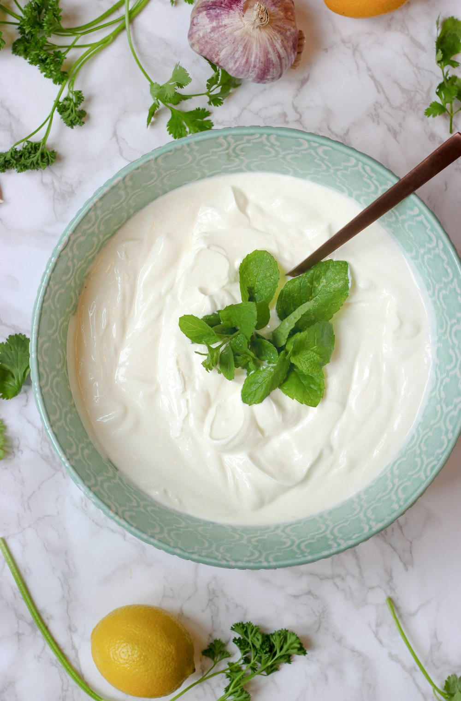

Latest issue
The Sunday Pour · No. 47
A quiet letter from a working dairy.
Farm notes, recipes and small observations from the meadow. We write slowly, once a week, about the things that make a morning taste like itself.